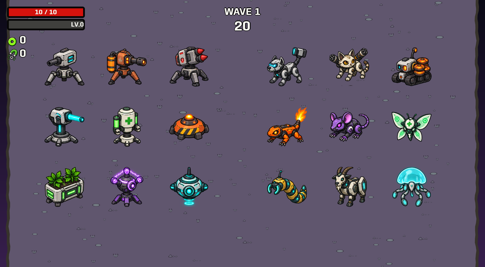
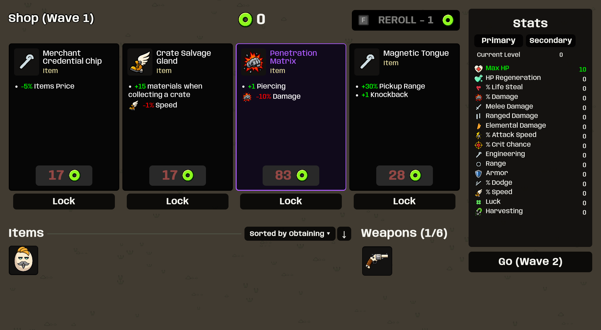
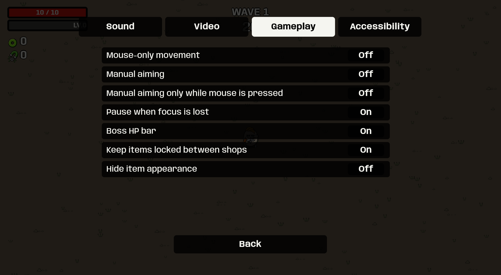

New original art for nine structures and nine companions. Mines arm on entry and explode on exit. Manual mouse-press aiming works independently. Numeric prices no longer become clipped “Slots full” labels.
Enlarged gallery from the actual Unity player; ordinary gameplay uses smaller sizes.



Original 146 BPM industrial EDM/metal synth loop. Use this player to audition it.
4,918 checked fields passed: 50 characters, 62 weapon identities / 205 tiers and all 209 registered base items. This verifies the listed data, not every possible runtime interaction or identical seeded RNG sequences.
At wave 6, ordinary rerolls cost 6, 8, 10, 12… before modifiers; a base-value-20 item costs 38 before modifiers.
80 staged UI captures and all nine companion behavior fixtures passed. These are automated scenes, not a human survival playthrough.
Implementation, reference formulas, limitations and interview notes